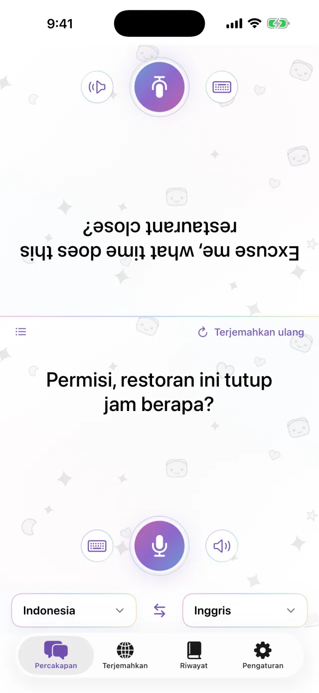
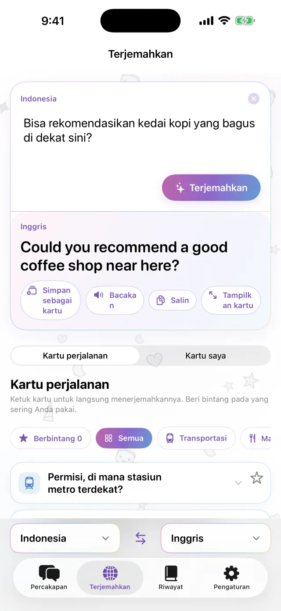
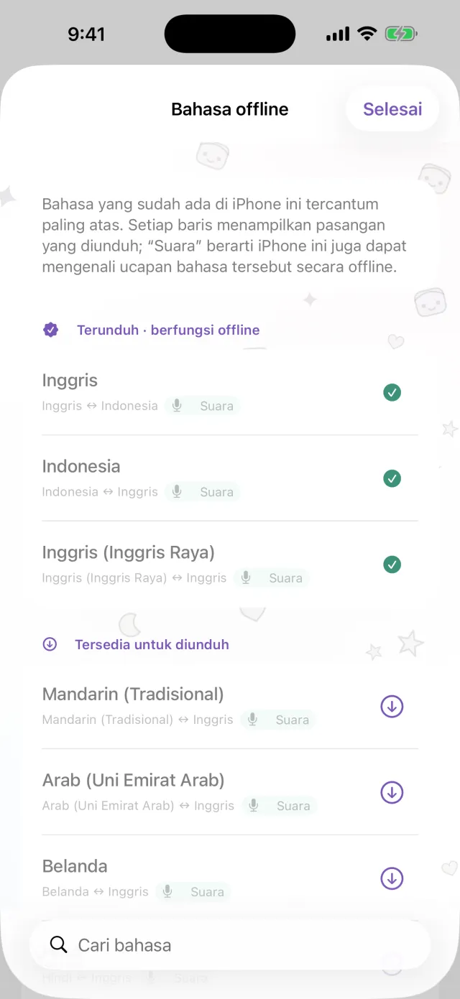
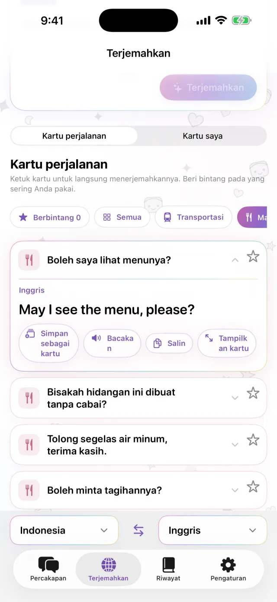
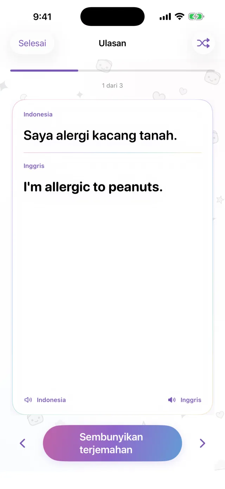

Penerjemah untuk iPhone
Penerjemah untuk iPhone
Taruh iPhone di tengah.
Cukup itu.
Ketuk mikrofon lalu bicara. Terjemahan muncul di separuh layar lainnya, menghadap lawan bicara. Saat mereka menjawab, caranya sama. Unduh bahasanya lebih dulu, maka aplikasi tetap bisa dipakai tanpa koneksi.
Segera hadir di App Store- Sekitar 20 bahasa
- Offline setelah diunduh
- Tanpa pendaftaran

Mengetik
Tidak bisa bicara? Ketik saja.
Di tempat yang sepi, atau saat lawan bicara terlalu cepat, ketik saja. Terjemahan bisa ditampilkan memenuhi layar, lalu diperlihatkan kepada mereka.
- Salin, atau dengarkan dibacakan
- Tukar kedua bahasa dengan satu ketukan

Offline
Tanpa koneksi, tetap bisa menerjemahkan
Terjemahan, pengenalan suara, dan pembacaan suara semuanya berjalan di iPhone. Unduh bahasa yang Anda perlukan sebelum berangkat. Aplikasi bisa dipakai di pesawat atau sebelum membeli SIM. Ucapan Anda tidak dikirim ke server, dan rekaman tidak disimpan.

Kartu kalimat
Simpan kalimat yang selalu Anda ucapkan
Alamat hotel, alergi makanan, stasiun yang dicari. Simpan sebagai kartu, jadi tidak perlu mengetik lagi. Ketuk kartu, dan kalimatnya diterjemahkan ke bahasa lawan bicara. Kartu perjalanan untuk transportasi, makan, penginapan, dan belanja sudah tersedia.

Pro
Lihat lagi kalimat yang pernah diterjemahkan
Riwayat terjemahan disimpan menurut tanggal. Kalimat yang ingin Anda ingat bisa dijadikan kartu hafalan. Bagian ini untuk Pro.

Berguna untuk
- Memesan makanan di restoran kecil
- Menyebutkan alamat kepada sopir taksi
- Menjelaskan alergi di apotek
- Menitipkan tas di meja resepsionis hotel
- Menanyakan jalan
Lihat dalam 30 detik
Mode pesawat aktif di video ini.
Info dasar
| Bahasa | Sekitar 20 (bahasa yang diterjemahkan Apple langsung di perangkat) |
|---|---|
| Offline | Ya, setelah bahasanya diunduh |
| Input suara | Ya. Beberapa bahasa hanya bisa lewat ketikan |
| Akun | Tidak diperlukan |
| Harga | Gratis. Pro berbayar terpisah (lihat di bawah) |
| Persyaratan | iPhone dengan iOS 18 atau lebih baru |
- Koneksi internet diperlukan saat pertama kali, untuk mengunduh bahasa.
- Harga ditampilkan dalam mata uang setempat di App Store.
Gratis dan Pro
Gratis
- Percakapan tatap muka
- Mengetik dan tampilan layar penuh
- Terjemahan offline
- Kartu perjalanan dan 3 kartu buatan sendiri
- Iklan banner kecil
Pro
- Tanpa iklan
- Kartu sebanyak yang Anda mau
- Riwayat terjemahan dan kartu hafalan
Pilih mingguan, bulanan, atau sekali beli.
Sebelum berangkat, unduh dulu bahasanya.
Segera hadir di App StoreiPhone · iOS 18 atau lebih baru · Gratis diunduh · Cara memakai tiap layar